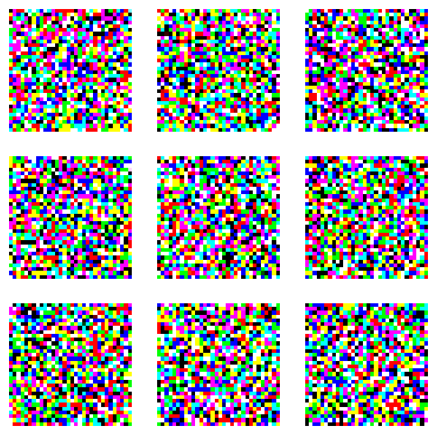

import math
import fastcore.all as fc
import matplotlib.pyplot as plt
import torch
import torch.nn.functional as F
import wandb
from functools import partial
from diffusers import UNet2DModel
from torch import tensor
from torch.optim import lr_scheduler
from tqdm import tqdm
from slowai.cos_revisited import DDPM
from slowai.learner import (
Callback,
DataLoaders,
DeviceCB,
Learner,
MetricsCB,
ProgressCB,
TrainCB,
after,
def_device,
only,
tensorize_images,
)
from slowai.sgd import BatchSchedulerCB, RecorderCB
from slowai.utils import clean_mem, get_grid, glomf, show_image, show_imagesCIFAR-10
In this module, we tackle a larger classification challenge with the CIFAR-10 dataset
Adapted from
RecorderCB??Init signature: RecorderCB(**d) Source: class RecorderCB(Callback): """Record internal state values at each batch.""" def __init__(self, **d): self.d = d self.learn = None def before_fit(self, learn): self.learn = learn self.recs = {k: [] for k in self.d} self.pg = learn.opt.param_groups[0] def after_batch(self, learn): if not learn.training: return for k, v in self.d.items(): self.recs[k].append(v(self)) def plot(self, **kwargs): n = len(self.recs) if "figsize" not in kwargs: K = 3 kwargs["figsize"] = (K * n, K) fig, axes = plt.subplots(1, n, **kwargs) if n > 1: axes = axes.flatten() else: axes = [axes] for ax, (k, v) in zip(axes, self.recs.items()): ax.plot(v, label=k) ax.legend() fig.tight_layout() File: ~/Desktop/SlowAI/nbs/slowai/sgd.py Type: type Subclasses:
Some notes about CIFAR-10:
- CIFAR-10 is the smallest dataset still used in the deep learning literature
- 94% accuracy is a baseline
- Jeremy does not like it, probably because things are two blurry for a human
def get_dls(bs=32):
return tensorize_images(
DataLoaders.from_hf("cifar10", bs=bs), feature="img", normalize=False
).listify()dls = get_dls()
imgs, _ = dls.peek()
show_images(imgs[:8, ...])Experiment Tracking with Weights and Biases
We want to practice keeping track of the experimental results. Weights and Biases is a great to do so.
MetricsCB??Init signature: MetricsCB(*ms, **metrics) Source: class MetricsCB(Callback): """Update and print metrics""" def __init__(self, *ms, **metrics): for o in ms: metrics[type(o).__name__] = o self.metrics = metrics self.all_metrics = copy(metrics) self.all_metrics["loss"] = self.loss = torchmetrics.aggregation.MeanMetric() def _log(self, d, learn): print(d) def before_fit(self, learn): learn.metrics = self def before_epoch(self, learn): [o.reset() for o in self.all_metrics.values()] def after_epoch(self, learn): log = {k: f"{v.compute():.3f}" for k, v in self.all_metrics.items()} log["epoch"] = learn.epoch log["train"] = "train" if learn.model.training else "eval" self._log(log, learn) def after_batch(self, learn): x, y = to_cpu(learn.batch) for m in self.metrics.values(): m.update(learn.preds.cpu(), y) self.loss.update(learn.loss.cpu(), weight=len(x)) File: ~/Desktop/SlowAI/nbs/slowai/learner.py Type: type Subclasses:
WandBDDPM
WandBDDPM (config, *ms, project=None, sample_f, **metrics)
Update and print metrics
As a motivating example, we’ll train a CIFAR-10 U-Net with more or fewer parameters.
cifar10_unet
cifar10_unet (small:bool)
def get_model_sizes():
for small in [True, False]:
model = cifar10_unet(small=small)
print(f"{sum(p.numel() for p in model.parameters()):,}")
get_model_sizes()15,891,907
274,056,163train
train (model, lr=0.001, n_epochs=2, bs=256, opt_func=functools.partial(<class 'torch.optim.adam.Adam'>, eps=1e-05), extra_cbs=[], ddpm=<slowai.ddpm.DDPM object at 0x7faa60e4afe0>)
train(cifar10_unet(small=True))Failed to detect the name of this notebook, you can set it manually with the WANDB_NOTEBOOK_NAME environment variable to enable code saving.
wandb: Currently logged in as: jfisher40. Use `wandb login --relogin` to force relogin
Tracking run with wandb version 0.16.2
Run data is saved locally in
/home/jeremy/Desktop/SlowAI/nbs/wandb/run-20240204_173430-vtygmh7z
View project at https://wandb.ai/jfisher40/cifar10-ddpm
| loss | epoch | train |
|---|---|---|
| 0.260 | 0 | train |
| 0.071 | 0 | eval |
| 0.063 | 1 | train |
| 0.059 | 1 | eval |
{'loss': '0.260', 'epoch': 0, 'train': 'train'}100%|████████████████████████████████████████████████████████████████████████████████████████████████████████████████████████████████████████████████| 99/99 [00:01<00:00, 64.64time step/s]{'loss': '0.071', 'epoch': 0, 'train': 'eval'}
{'loss': '0.063', 'epoch': 1, 'train': 'train'}100%|████████████████████████████████████████████████████████████████████████████████████████████████████████████████████████████████████████████████| 99/99 [00:01<00:00, 66.82time step/s]{'loss': '0.059', 'epoch': 1, 'train': 'eval'}wandb: WARNING Source type is set to 'repo' but some required information is missing from the environment. A job will not be created from this run. See https://docs.wandb.ai/guides/launch/create-jobRun history:
| loss | █▇▅▃▂▂▂▂▂▁▁▁▁▁▁▁▁▁▁▁▁▁▁▁▁▁▁▁▁▁▁▁▁▁▁▁▁▁▁▁ |
| train_loss | █▁ |
| val_loss | █▁ |
Run summary:
| loss | 0.10664 |
| train_loss | 0.063 |
| val_loss | 0.059 |
View run avid-resonance-26 at: https://wandb.ai/jfisher40/cifar10-ddpm/runs/vtygmh7z
Synced 5 W&B file(s), 2 media file(s), 0 artifact file(s) and 0 other file(s)
Synced 5 W&B file(s), 2 media file(s), 0 artifact file(s) and 0 other file(s)
Find logs at:
./wandb/run-20240204_173430-vtygmh7z/logs

train(cifar10_unet(small=False), bs=32)
Tracking run with wandb version 0.16.2
Run data is saved locally in
/home/jeremy/Desktop/SlowAI/nbs/wandb/run-20240204_173618-ztd8ioj7
View project at https://wandb.ai/jfisher40/cifar10-ddpm
| loss | epoch | train |
|---|---|---|
| 0.570 | 0 | train |
| 1.000 | 0 | eval |
| 1.000 | 1 | train |
| 1.000 | 1 | eval |
{'loss': '0.570', 'epoch': 0, 'train': 'train'}
100%|████████████████████████████████████████████████████████████████████████████████████████████████████████████████████████████████████████████████| 99/99 [00:03<00:00, 29.56time step/s]{'loss': '1.000', 'epoch': 0, 'train': 'eval'}
{'loss': '1.000', 'epoch': 1, 'train': 'train'}100%|████████████████████████████████████████████████████████████████████████████████████████████████████████████████████████████████████████████████| 99/99 [00:03<00:00, 30.27time step/s]{'loss': '1.000', 'epoch': 1, 'train': 'eval'}wandb: WARNING Source type is set to 'repo' but some required information is missing from the environment. A job will not be created from this run. See https://docs.wandb.ai/guides/launch/create-jobRun history:
| loss | ▁▂▁▁▁▁▁▁████████████████████████████████ |
| train_loss | ▁█ |
| val_loss | ▁▁ |
Run summary:
| loss | 0.99901 |
| train_loss | 1.0 |
| val_loss | 1.0 |
View run copper-elevator-27 at: https://wandb.ai/jfisher40/cifar10-ddpm/runs/ztd8ioj7
Synced 5 W&B file(s), 2 media file(s), 0 artifact file(s) and 0 other file(s)
Synced 5 W&B file(s), 2 media file(s), 0 artifact file(s) and 0 other file(s)
Find logs at:
./wandb/run-20240204_173618-ztd8ioj7/logs


We seem to have convergence issues.
Some things to try:
- Reduce LR
- Experiment with initialization